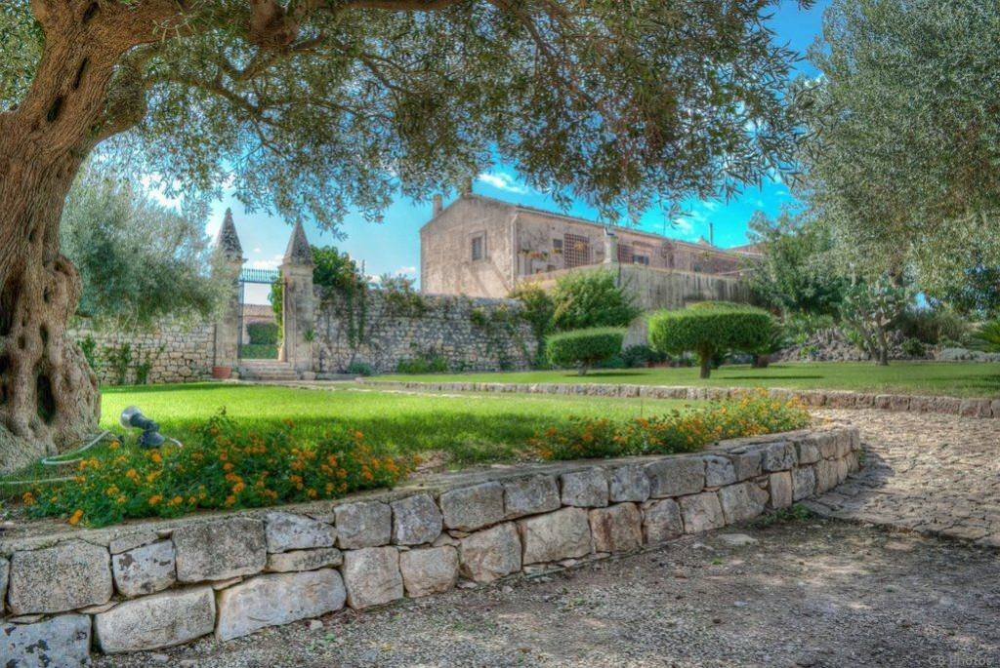

La Cerimonia: Duomo di San Pietro
Vi aspettiamo al maestoso Duomo di San Pietro. Un consiglio da amici: Si dice che salire quegli scalini sia il primo test di resistenza per il matrimonio... noi siamo pronti alla scalata, e voi?! La scalinata è uno spettacolo, sorvegliata dalle imponenti statue dei dodici apostoli (che i modicani chiamano "i santoni").